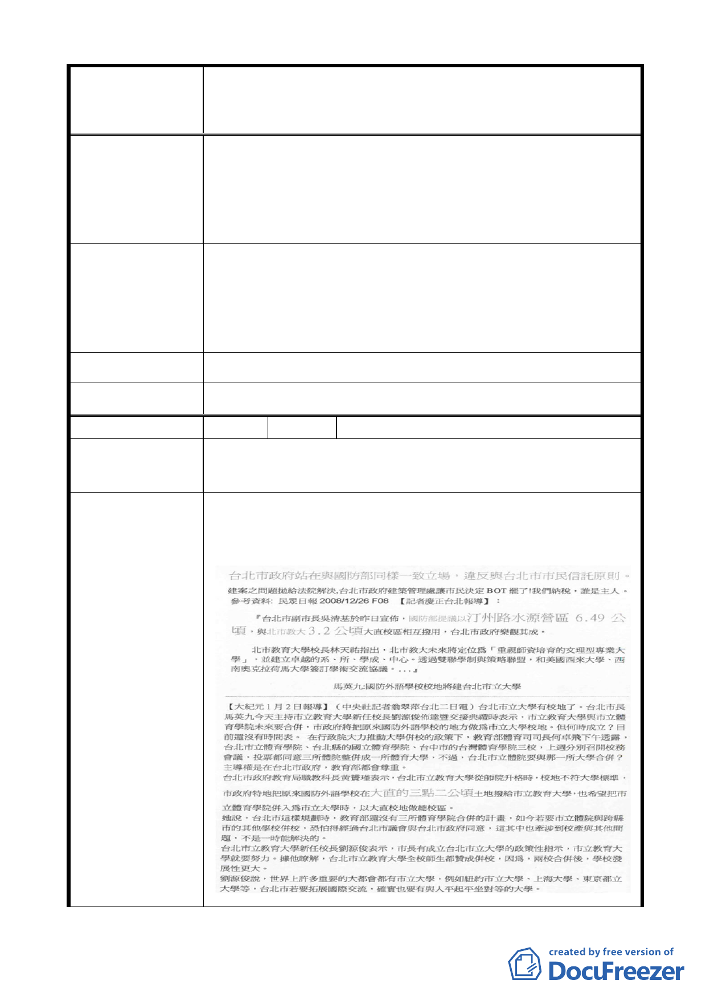

變更臺北市中山區北安段三小段 297-1 地號等20 筆高職
案 名 用地為機關用地（供國防部國防專區使用）及抽水站用地主
要計畫案
居民權利。
2. 大直地區並非長屬淹水地區，於環境治安良好地區，不
宜建抽水站。
3. 台北市房價過高，於寸土寸金地區應好好規劃而不是如
此草率。
1. 若國防部仍有相關使用土地需求，應先妥善安排居住問
題。
建 議 辦 法 2. 淹水問題應平時就需注意排水系統。
3. 應多蓋些平價住宅，讓一些買不起的人也能有住的權利。
4. 如真需將此地拆除作為它用，請先安置後拆遷。
市 府 回 覆 意 見 同編號 5（二）、（三）市府回應說明。
大 會 決 議 同編號 5 決議。
編 號 25 陳情人 劉校秀
這塊地可以如此千變萬化，國防部願意如此犧牲，真起人疑
陳 情 理 由 竇且必會落人口實的。
抽水站用地一併納入國防部。
懇請國防部不要只安置『官』而讓『兵』自生自滅。（不願
被人遺忘的一群弱勢）
建議辦法
- 18 -